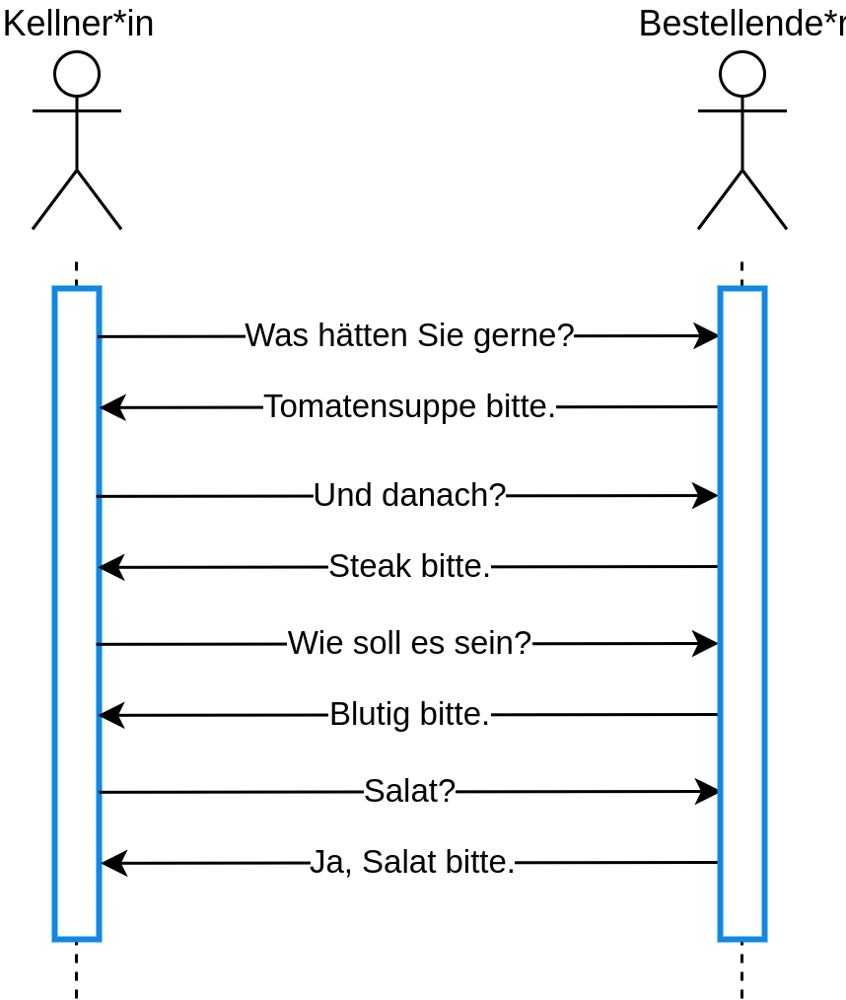
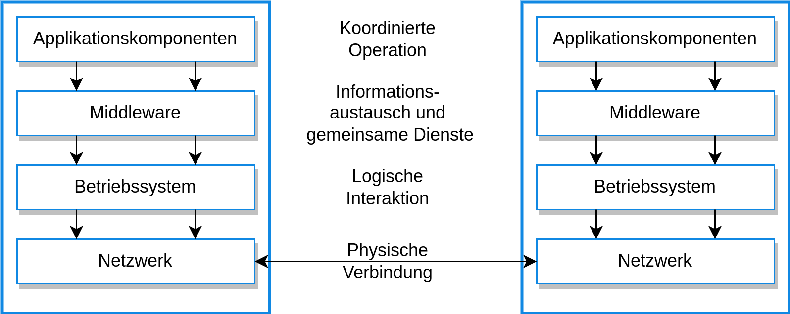
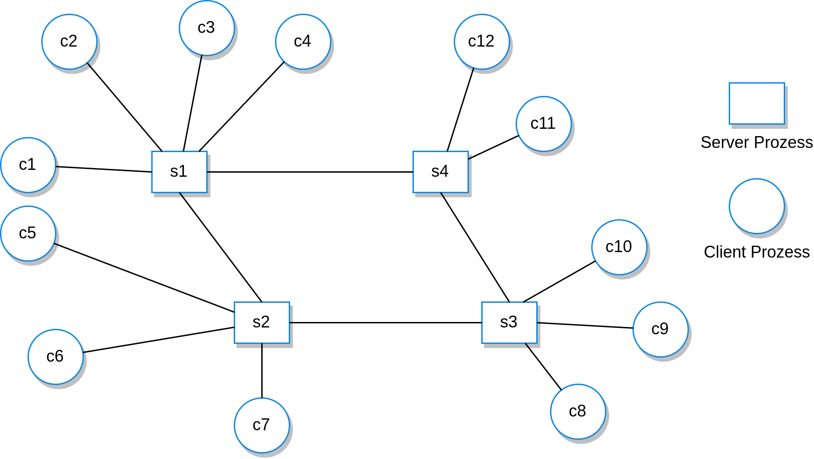
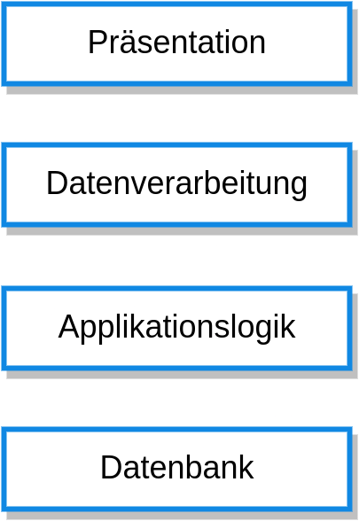

class: center, middle # Distributed Software Engineering # **Autor:** Malte Reinsch --- ### Inhalte - Einleitung - Verteilte Systeme - Client-Server Computing - Architekturmuster für verteilte Systeme - Software as a Service --- ### Einleitung - die meisten modernen Systeme sind verteilt - d.h.: mehr als ein Rechner beteiligt - Tannenbaum & Van Steen: "Eine Sammlung aus unabhängigen Rechnern, die aus Sicht des Nutzers als einzelnes zusammenhängendes System wahrgenommen wird" --- ### Vorteile Verteilte Systeme haben einige Vorteile: 1. Geteilte Ressourcen 2. Offenheit 3. Nebenläufigkeit 4. Skalierbarkeit 5. Fehlertoleranz ### Wo Licht, da auch Schatten... - deutlich (!) komplexer - Antwortzeit hängt von Gesamtbelastung ab --- ### Verteilte Systeme Komplexität: - keine Komponente hat die komplette Kontrolle über das System (Unberechenbarkeit) - das Netzwerk ist ein eigenes System - Interaktion von Komponenten unterschiedlicher Hersteller Wichtige Entwicklungsaspekte: - Transparenz - Offenheit - Skalierbarkeit - Sicherheit - Dienstqualität (QoS) - Fehlermanagement --- ### Interaktionsmodelle Zwei Interaktionsarten der System-Rechner: - prozedurale Interaktion - Nachrichtenbasierte Interaktion --- ### Interaktionsmodelle <div style="margin-top:20px;">  </div> --- ### Interaktionsmodelle Nachricht an die Küche: ``` <starter> <dish name = “soup” type = “tomato” /> <dish name = “soup” type = “fish” /> <dish name = “pigeon salad” /> </starter> <main course> <dish name = “steak” type = “sirloin” cooking = “medium” /> <dish name = “steak” type = “fillet” cooking = “rare” /> <dish name = “sea bass”> </main> <accompaniment> <dish name = “french fries” portions = “2” /> <dish name = “salad” portions = “1” /> </accompaniment> ``` --- ### Middleware Komponenten verwenden verschiedene - Programmiersprachen - Rechnerarchitekturen - Protokolle - ... Mit Middleware wird das Zusammenspiel der Komponenten gewährleistet. Zwei Arten der Unterstützung: - Interaktionshilfe - Bereitstellung gemeinsamer Dienste --- ### Middleware <div style="margin-top:20px;">  </div> --- ### Client-Server Computing - Modellierung der Software als Sammlung von Diensten - Server bieten Dienste an - Clients nutzen Dienste --- ### Client-Server Computing <div style="margin-top:20px;">  </div> --- ### Schichtenmodell <div style="margin-top:20px;">  </div>